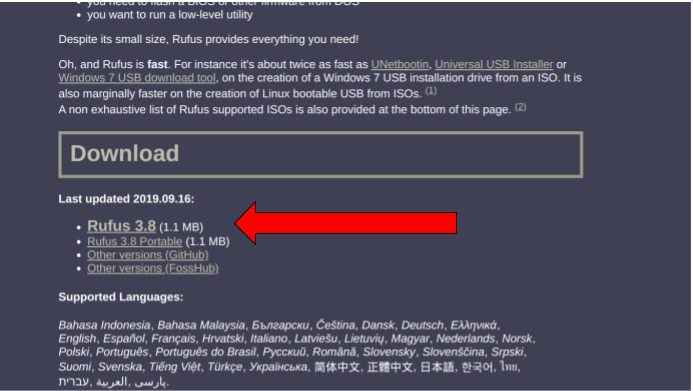
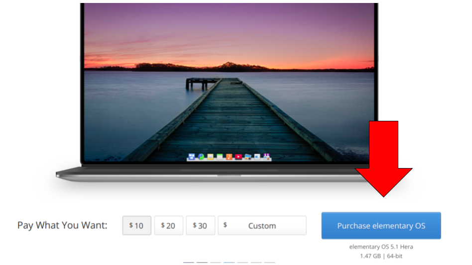
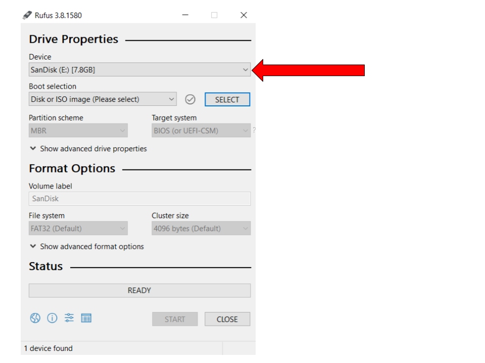
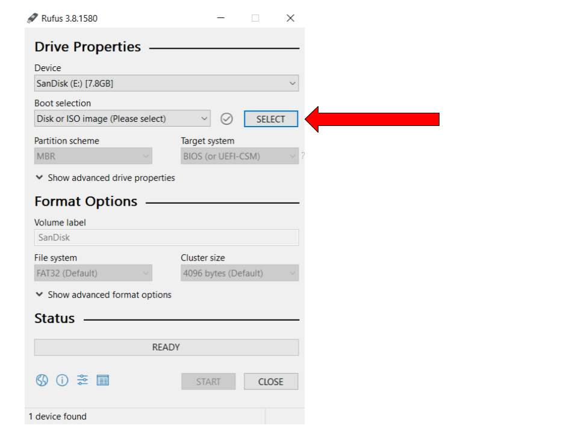
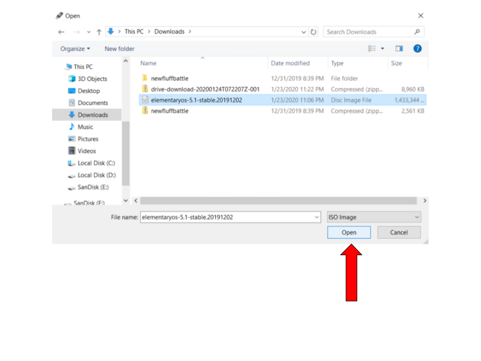
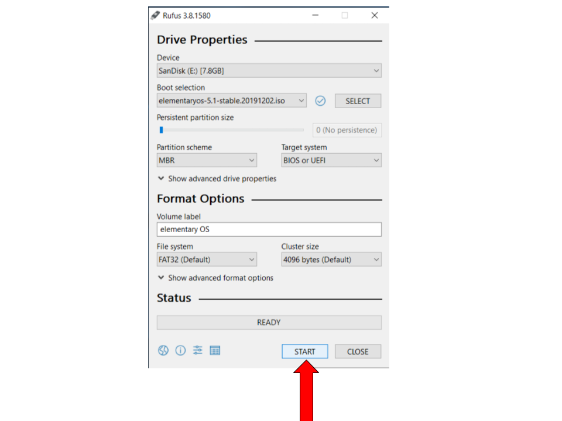
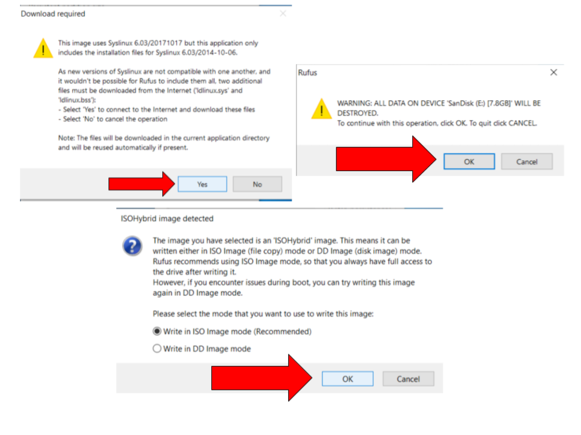
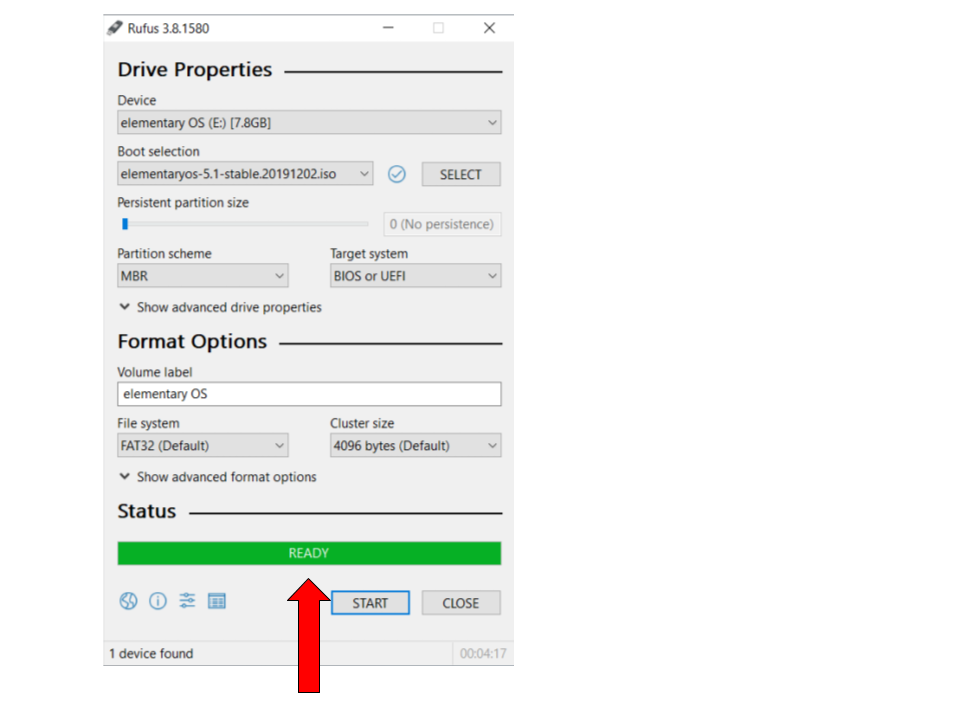

How to Make a Bootable USB drive
Downloading Rufus:
- Go to the Rufus website.
- Scroll down to the "Downloads" section, and select the latest version of Rufus (Rufus 3.8 as of Jan 23, 2020)

Downloading ElementaryOS:
- Go to the Elementary OS website.

- In the download section, click on one of the payment amounts.
NOTE: You can click Custom and type "0" in case you don't want to pay.
- Click on the Download button.
Formatting the USB drive:
- Double click the rufus.exe file that we downloaded in step 1.(It should be in your Downloads folder.)
- Select the USB that you want to use under the device drop-down menu.

- Click the Select button.

- Browse through your files to find the Elementary OS ISO that we downloaded earlier. (This should also be in your Downloads folder.)

- Click Start.

- If any of the following dialog boxes show up, click on the respective buttons marked by the red arrow.

- A green 'Ready' bar indicates the process has been completed.

Congratulations! You have successfully created a bootable USB drive!